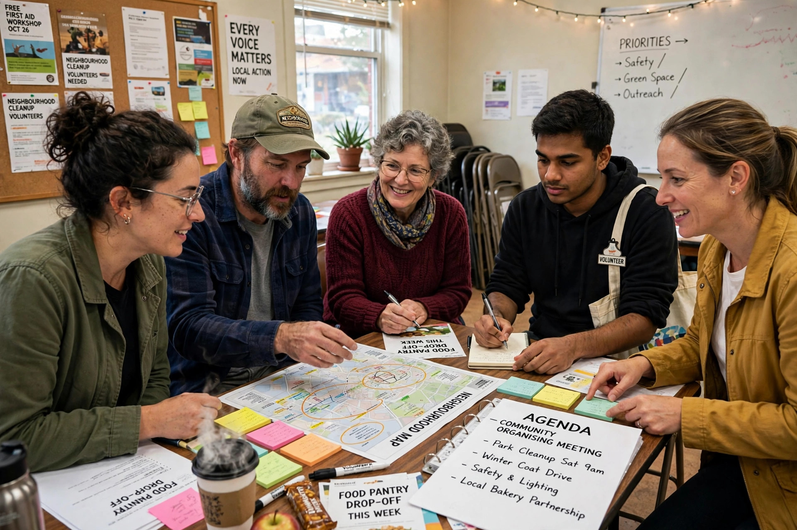

A grassroots movement is one that uses the people in a given district, region or community as the basis for a political, social or economic movement. Grassroots movements and organisations use collective action from the local level to implement change at local, regional, national or international levels, in contrast to top-down approaches directed by established leaders.

Grassroots movements employ tactics including house meetings, petition drives, door-to-door canvassing, voter registration, letter-writing, demonstrations, boycotts and fundraising from many small donors. The internet and social media have lowered the cost of coordinating such activity, enabling rapid mobilisation around issues from climate change to local planning decisions.
The contrast is astroturfing — campaigns that appear grassroots but are in fact created or funded by corporations, governments or political organisations to manufacture the impression of spontaneous public support. The term plays on AstroTurf, a brand of artificial grass.
The metaphor draws on the roots of grass as the common people. In the United States it has been applied to movements from abolitionism and populism to the civil rights movement and community organising in the tradition of Saul Alinsky. Similar bottom-up models appear worldwide in environmental, human-rights and anti-poverty campaigns.